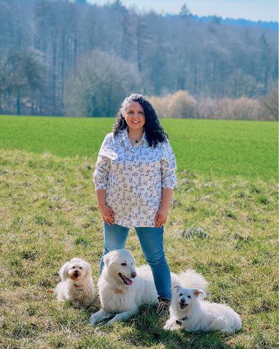

Organización
Formamos perros para acompañar a personas cuya discapacidad no se ve. Estos perros trabajan dentro de un vínculo, y ese vínculo es justamente lo que protegemos para que puedan seguir cumpliendo su función durante años.
Cómo se organiza PSD Latinoamérica
PSD Latinoamérica es una organización jurídicamente independiente y académicamente afiliada a PSDeurope. Según el modelo que ambas organizaciones estamos definiendo en un Memorandum of Understanding, nosotros impartimos la formación y PSDeurope actuaría como garante de la calidad y emitiría la certificación internacional. Nuestra enseñanza se canaliza a través de la Escuela Canina, nuestro campus en línea.
Dirección

Miembro fundadora de PSD Latinoamérica. Es responsable de la metodología de formación, los protocolos, la evaluación de cada binomio y la relación con PSDeurope, donde trabaja como entrenadora sénior.

Miembro fundador de PSD Latinoamérica. Es responsable de la tecnología y la administración: la plataforma de aprendizaje, los expedientes digitales y los sistemas que dan soporte a la certificación.
Qué aporta cada organización
Un reparto claro de responsabilidades es lo que hace que una alianza dure. Así lo hemos planteado con PSDeurope.
PSDeurope
- Experiencia y reconocimiento internacional
- Estándares de calidad consolidados
- La marca PSD y su metodología
- Acreditación, auditoría y certificación internacional
PSD Latinoamérica
- Formación impartida íntegramente en español
- Conocimiento de la realidad latinoamericana
- Adaptación cultural de los programas
- La plataforma en línea y los expedientes
El marco de cooperación —objetivos comunes, uso del nombre PSD, cooperación académica, protección de datos, independencia financiera y procedimiento para finalizar la colaboración— se está definiendo actualmente en un Memorandum of Understanding. Los materiales desarrollados específicamente para Latinoamérica pertenecen a PSD Latinoamérica; los materiales europeos, la metodología y la marca PSDeurope siguen siendo propiedad de PSDeurope.
¿Tienes preguntas? Escríbenos
Datos de contacto
PSD Latinoamérica
Perros de asistencia para discapacidades invisibles
Correo electrónico: info@psdlatam.com